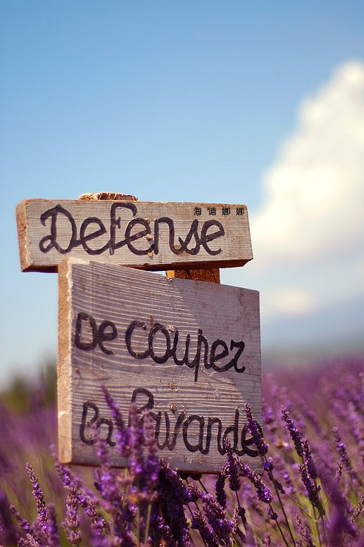

薰衣草之乡——普罗旺斯
普罗旺斯(Provence)，全称普罗旺斯-阿尔卑斯-蓝色海岸(Provence-Alpes-Côte d'Azur)
普罗旺斯之旅
著名景点
吕贝隆山区(Luberon)Sault修道院的花田——最著名的薰衣草观赏地
施米雅那山区(Simiane-la-Rotonde)的施米雅—— 一座极具特色的山城
Luberon(吕贝隆)是沃克里兹省的南部地区——Roussillon(鲁西庸)彩色的村庄
Gordes是座岩石山庄——薰衣草博物馆
艾克斯市——罗马普罗旺斯的古都
地理环境
普罗旺斯(Provence)位于法国南部。最初的普罗旺斯北起阿尔卑斯山，南到比利牛斯山脉，包括法国的整个南部区域。埃克斯市Aix-en-Provence是画家保尔·塞尚的故乡，自中世纪起就是一座大学城，也是著名的"泉城"。这里是罗马普罗旺斯的古都。 在今天仍以古罗马遗迹、中世纪、哥特式和文艺复兴风格建筑而著称。埃克斯市还以独特的烹饪、玫瑰红葡萄酒、以及特别的语言--普罗旺斯方言闻名。

地方美食
许多人常用三种食物代表普罗旺斯的烹调特色:橄榄油、大蒜与西红柿。走在普罗旺斯，触目所及几乎都是绿油油的橄榄树，此地可以说是法国橄榄油生产的重镇，不仅造就了别致地自然景观，也提供了居民营养所须的油脂。橄榄也顺理成章的走入每家的厨房，橄榄酱(tapenade)即是最佳范例。
大蒜辣椒酱:所谓的rouille就是大蒜辣椒酱，其原料有大蒜、辣椒、橄榄油、面包屑与鱼高汤。有人喜欢先把它涂抹在面包上，或者你也可以直接放在鱼汤内，有了大蒜辣椒酱，马赛鱼汤才算完整。
橄榄酱:将大蒜与鳀鱼(anchovy)分别切碎，加入洗净的酸豆(capers)、百里香、香薄荷(savory)和柠檬汁，以食物处里机打匀，徐徐倒入橄榄油，并以胡椒调味。做好的橄榄酱涂抹在稍微烘烤的面包上就是最道地的开胃菜
旅游信息
普罗旺斯的住宿相当有特色，如同当地多元化的生活风貌，从市区的豪华大饭店到乡间的民宿农庄，应有尽有，同样提供了舒适的休息环境与地方饮食。
若是本身懂法语，或能找到懂法语的人随行，可考虑在供应餐点的民宿过夜，感受当地的风俗民情。有的民宿还安排房客参加地方的活动，例如和当地人一同用餐，天南地北的闲聊起来，满天星斗下共同欢乐，那种融洽的气氛应是地球村精神的最佳呈现。